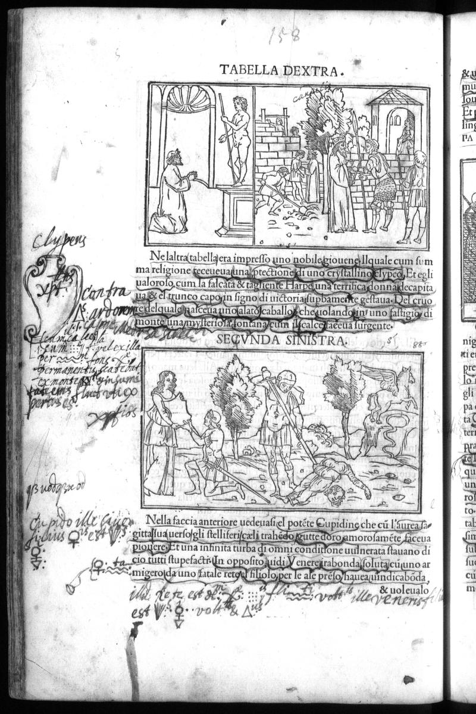

Signature k7v
Folio 79v, Quire k

British Library, London — C.60.o.12
Vision Reading (Phase 3 deep analysis)
Primary hand: Multiple · Hands: 2 · Type: woodcut_page · Sig: k8v
Woodcut: TABELLA DEXTRA and SECVNDA SINISTRA panels
Two stacked woodcut panels. Top: TABELLA DEXTRA showing figures in a doorway scene. Bottom: SECVNDA SINISTRA showing figures in an outdoor/garden scene with Cupid. Part of the triumphal procession sequence.
Condition: Good
Transcription Attempts
left_margin · Latin · LOW
Clypeus [...] Contra [...] R [...] grotto [...] mortuorum [...] aliquo [...]
'Clypeus' (shield), 'mortuorum' (of the dead). Reader noting funerary/martial elements in the procession
left_margin_lower · Latin · LOW
gr[...] Saturni [...] et [...] Atago [...]
'Saturni' (of Saturn). Planetary reference in the procession — Saturn = lead in alchemical tradition
bottom · Latin/Italian · LOW
[...] dei [...] est [...] V [...] volonte [...] Alio [...] [...] & noleualo [...]
Bottom annotations partially illegible
Scholarly Significance
Page 158 — deep in the triumphal procession. The 'Saturni' annotation is notable: Saturn is the planet of lead, melancholy, and time in both astrological and alchemical tradition. Finding a Saturn reference in the procession annotations connects the triumphal imagery to the same planetary/alchemical framework seen on p.88 (planetary palace) and p.17 ('planete'). The word 'mortuorum' (of the dead) reinforces the funerary dimension of triumph.
Cross-references: Photo 101 (p.88, planetary palace), Photo 30 (p.17, 'planete')
Vision reading (Claude Code, Phase 3)